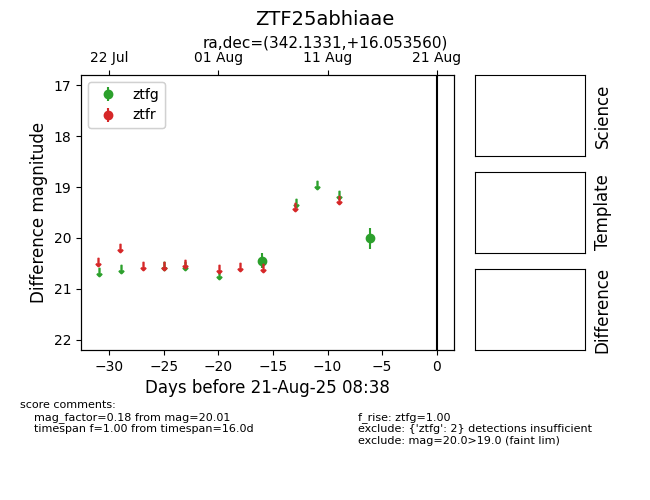

Target ZTF25abhiaae at 2025-08-21 08:38, see:
FINK: fink-portal.org/ZTF25abhiaae
Lasair: lasair-ztf.lsst.ac.uk/objects/ZTF25abhiaae
ALeRCE: alerce.online/object/ZTF25abhiaae
alt names
ZTF25abhiaae (ztf,alerce)
coordinates:
equatorial (ra, dec) = (342.1331,+16.05356)
galactic (l, b) = (84.6797,-37.52581)
photometry
last ztfg=20.01
2 ztfg detections
